Top 10 Spot Terfavorit
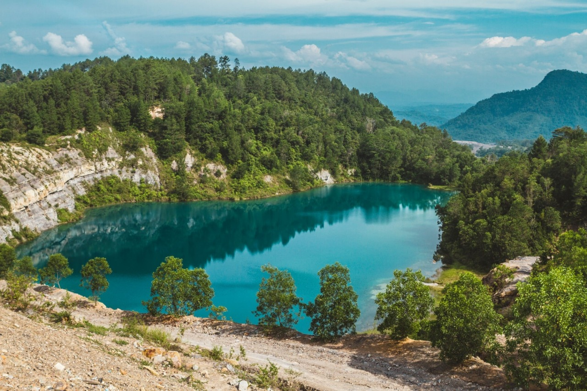
Danau Biru
1.234 posts
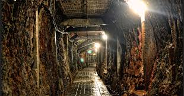
Tambang Ombilin
987 posts
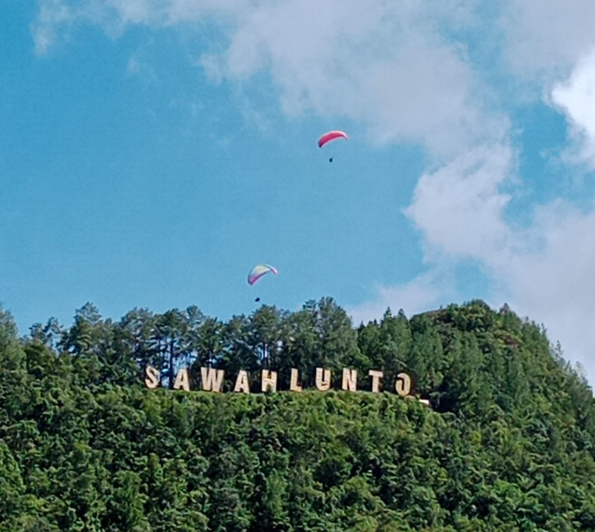
Puncak Polan
876 posts
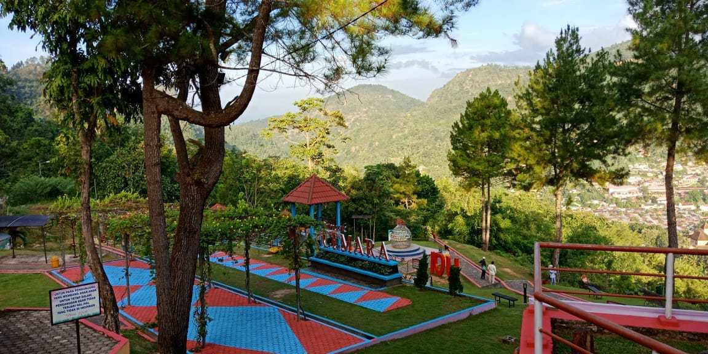
Puncak Cemara
654 posts
Spot Heritage & Sejarah
Tambang Ombilin
UNESCOLubang tambang bersejarah dengan latar industrial yang unik
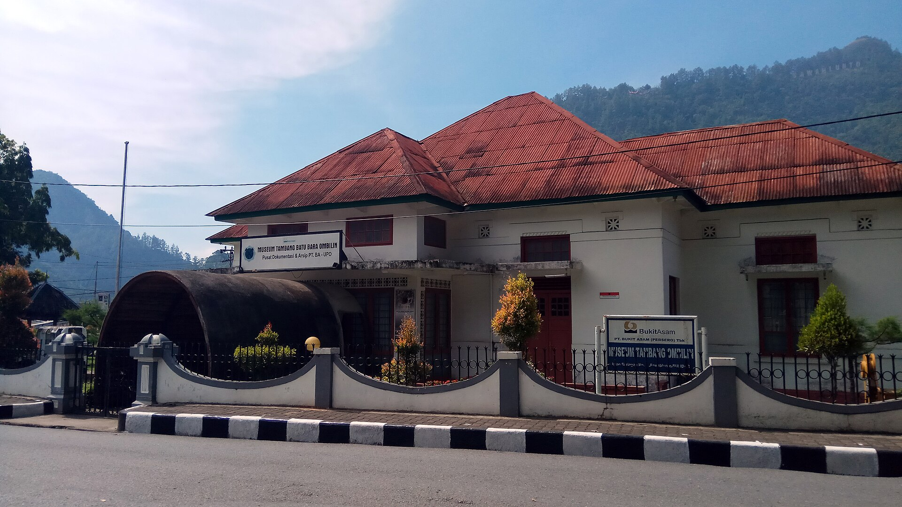
Museum Tambang
Bangunan kolonial dengan koleksi alat tambang antik
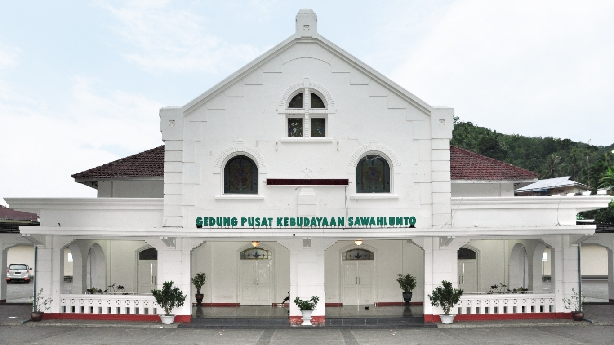
Gedung Pusat Kebudayaan
Arsitektur kolonial dengan pilar-pilar megah
Spot Alam & Pemandangan
Danau Biru
Air danau berwarna biru jernih dengan latar perbukitan
Puncak Polan
Spot favorit untuk foto dengan latar kota dari ketinggian
Puncak Cemara
Bukit dengan deretan pohon cemara dan view Danau Biru
Spot Urban & Street Photography
Kota Tua Sawahlunto
Deretan bangunan kolonial berjejer rapi
Jembatan Kereta Api
Jembatan bersejarah dengan rel kereta tua
Stasiun Sawahlunto
Stasiun heritage dengan arsitektur khas
Pecinan Lama
Kawasan dengan nuansa Tionghoa klasik
Galeri Foto Pengunjung
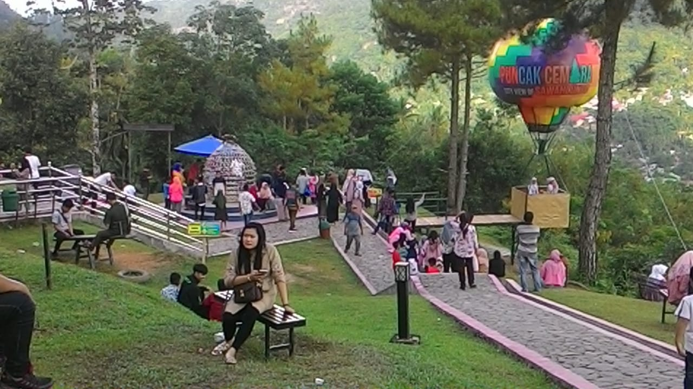
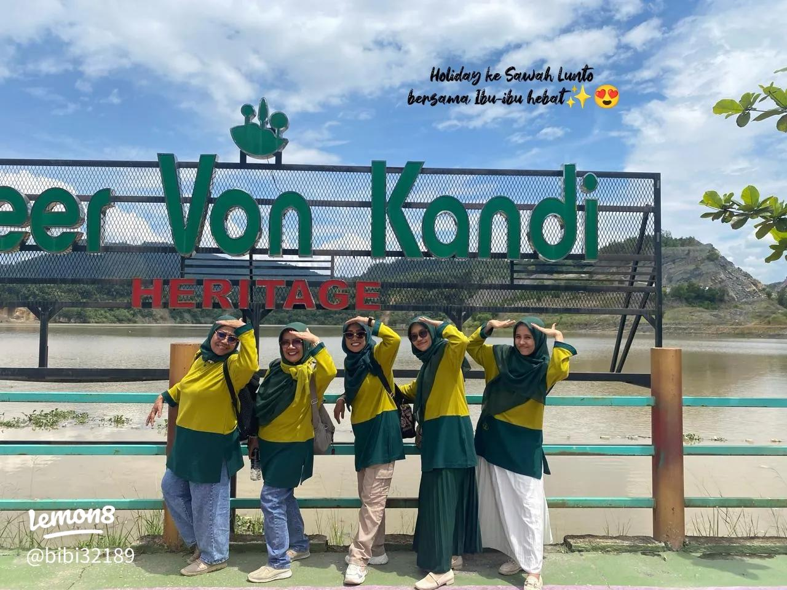
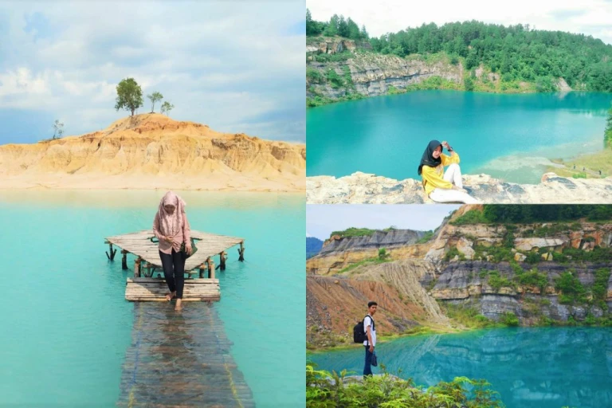
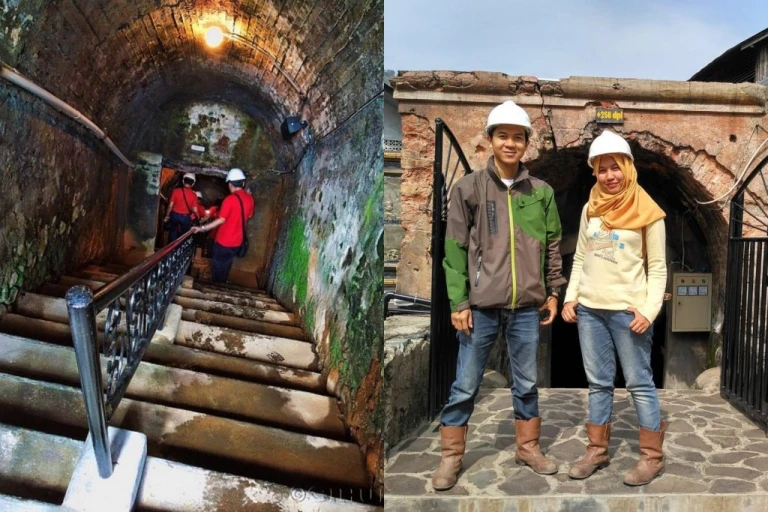
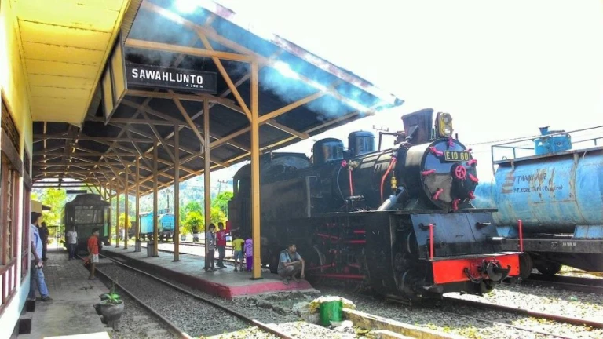
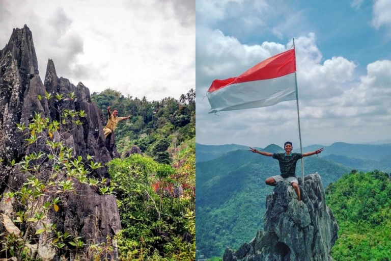
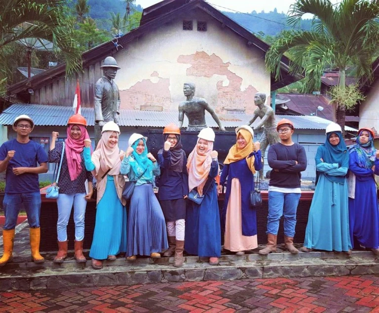

Tips Fotografi di Sawahlunto
Golden Hour
Waktu terbaik 06.00-08.00 & 16.00-18.00
Lensa Wide
Cocok untuk landscape dan bangunan heritage
Cuaca Cerah
Hindari musim hujan untuk hasil maksimal
Warna Kontras
Baju warna cerah kontras dengan background